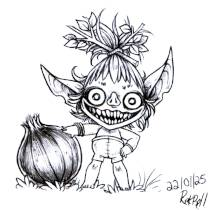
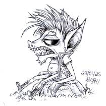
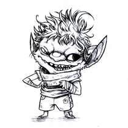
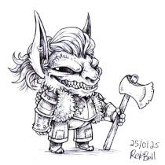
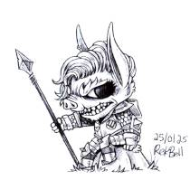
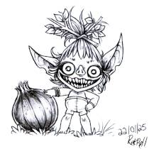
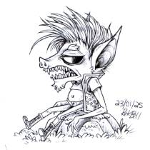
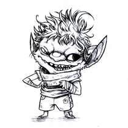
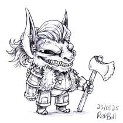
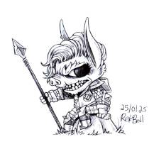

About
About Projects
Projects Games
Games Stories
Stories Store
Store Hobby
Hobby Notes
Notes How-to
How-toIn the words of its creator Evan Dahm ...
Goblin Week is an event in which you make goblins every day for a week, whatever that means to you.
It's a low-pressure community art project, meant to spread joy and creativity, participants are encouraged to "follow their heart. There are no strict rules. Entries are usually tagged across various platforms under #goblinweek.
2026
This year's goblin week begins on Jan 25th. Stay Tuned!
2025
I participated for the first time in January 2025(Jan 19-25th), here are my entries:

 









In order, their names are Arnar, Helka(and Yammers), "out of bag" Yammers, Joi, Hannes, Jorn, Neils, Björn & Elín.